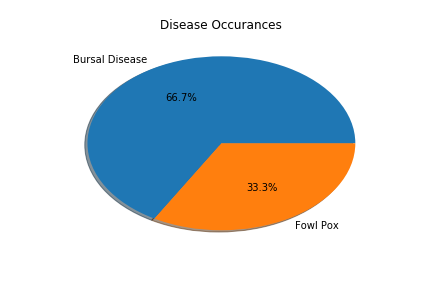
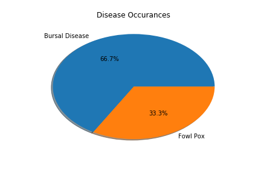

Hi there!
It works!
Finally!
{{ call_sessions }}
Record from CallSession: {{ record }}
Record from CallSessionStep: {{ record }}
Query : {{ sql }}


 

 {% load staticfiles %}
{% load staticfiles %}